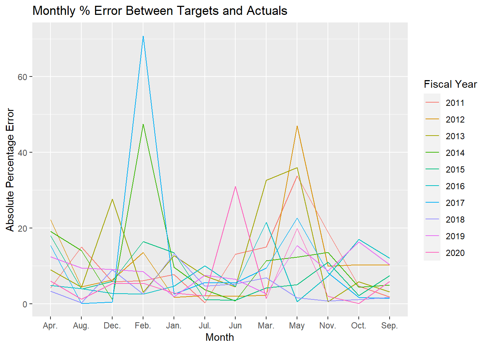
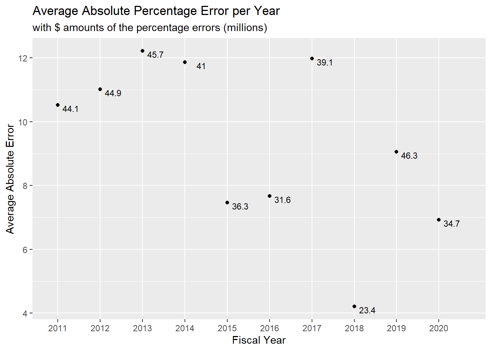

V609: Assignment 1
V609: Assignment 1
Andrew J. Poulter
MPA Student
Paul H. O’Neill School of Public & Environmental Affairs
andpoult@iu.edu
MPA Student
Paul H. O’Neill School of Public & Environmental Affairs
andpoult@iu.edu
February 19, 2021
Memo
To: Indiana State Budget Committee
From: Andrew J. Poulter
Date: February 19, 2021
Re: Revenue Targets for FY2022
Monthly Targets for FY2022
To create revenue targets for FY2022, I calculated the share of total revenue that each month in FY2019 accounted for as part of the total revenue collection for that year. I then multiplied the value of each monthly share in FY2019 with the total revenue collected in FY2020 to create monthly targets for FY2020. After creating targets for FY2020, I compared them to the actual monthly revenue collected in FY2020 to see how FY2019 shares did in predicting FY2020 actual revenue.
I conducted the same process with various combinations of years going back to FY2013 by calculating average monthly shares across a span of years. The results of those analyses are found in Table 1 and they give a picture for how each combination of years did in predicting actual FY2020 monthly revenues.
| Fiscal Years Averaged | Jul. | Aug. | Sep. | Oct. | Nov. | Dec. | Jan. | Feb. | Mar. | Apr. | May | Jun. | Yearly Average Errors |
|---|---|---|---|---|---|---|---|---|---|---|---|---|---|
| 19 | 16.31 | 0.27 | 6.29 | 1.27 | 4.14 | 2.77 | 3.20 | 31.75 | 3.70 | 1.93 | 13.12 | 24.32 | 9.09 |
| 18-19 | 16.96 | 2.45 | 10.31 | 9.81 | 0.04 | 3.50 | 17.72 | 26.45 | 0.34 | 5.22 | 15.27 | 13.62 | 10.14 |
| 17-19 | 12.36 | 11.23 | 10.48 | 15.52 | 2.60 | 5.86 | 18.35 | 24.44 | 3.07 | 11.27 | 29.95 | 12.79 | 13.16 |
| 16-19 | 11.03 | 16.46 | 13.95 | 17.87 | 9.21 | 6.88 | 17.44 | 25.67 | 5.31 | 12.81 | 34.76 | 12.87 | 15.36 |
| 15-19 | 9.64 | 14.09 | 12.16 | 15.39 | 11.94 | 7.71 | 15.50 | 25.35 | 3.86 | 12.46 | 32.90 | 15.79 | 14.73 |
| 14-19 | 8.73 | 12.59 | 10.17 | 13.09 | 10.51 | 5.36 | 15.38 | 24.61 | 1.91 | 12.99 | 28.69 | 17.95 | 13.50 |
| 13-19 | 11.02 | 11.44 | 9.33 | 11.99 | 9.79 | 7.72 | 15.79 | 21.10 | 4.94 | 11.51 | 26.23 | 18.22 | 13.26 |
| Note: | |||||||||||||
| When looking at the average percentage error for various combinations of years to the FY2020 actual monthly revenues, there were large errors for April FY2020 compared to any of the estimates because the COVID-19 pandemic disrupted tax collections. It dropped the April actual revenues from 1,233 millions of dollars in FY2019 to 477 millions of dollars in FY2020. Because this impact from the pandemic is an anomaly and not likely to occur again soon, I used the April FY2019 actual revenue to compare to the average share across various years so that the estimates better reflect the norm. |
The table clearly shows that adding more years increases the error of the monthly targets.1 Due to that, I chose to use the share estimates from FY2019 only, which had the smallest error: 9.09%. I multiplied the monthly shares from FY2019 with the expected revenue for FY2022 to produce monthly estimates for FY2022. Table 2 displays those estimates.
| Jul. | Aug. | Sep. | Oct. | Nov. | Dec. | Jan. | Feb. | Mar. | Apr. | May | Jun. | Total | |
|---|---|---|---|---|---|---|---|---|---|---|---|---|---|
| FY2022 | $463 | $376 | $660 | $422 | $367 | $513 | $691 | $135 | $413 | $1,296 | $392 | $635 | $6,369 |
Historical Analysis of Targets for FY11-FY20
In addition to the target estimates, I analyzed how well monthly targets over the past 10 years have done compared to actual collections. The graph “Monthly % Error Between Targets and Actuals” below shows the percentage error of each month across the 10 year span.2 For the most part, the errors are less than 20%, with 0.12% being the lowest. Perhaps more helpful is to see the yearly average percentage error, which is plotted in the graph titled “Average Absolute Percentage Error per Year”. Each point shows the average percentage error for the year, with an accompanying number showing the dollar value (millions) of the percentage error. The largest error is 12.22% and the lowest is 4.2%. This suggests that, for the whole year, Indiana often gets relatively close to its overall revenue forecast as positive target errors and negative target errors balance each other out.3

The accuracy appears to turn around with FY2013, but analyses I did not include in this report show that the accuracy does not continue improving.↩︎
As I did in the graph titled Table 1 errors, I used the actual revenue for April FY2019 when comparing the targets of FY2020 to the actual collections in FY2020. This creates a more accurate picture of normal circumstances.↩︎
It should be noted that while the figures here suggest the error is always positive - actual revenues exceed the targets - this is not always the case. Sometimes, the actual revenue is lower than the targets, but to create average percentage errors, it was necessary to use absolute values. Data on the proportion of errors that are negative and errors that are positive is available upon request.↩︎